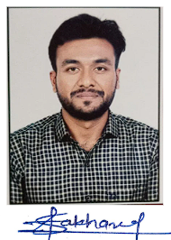

Resume

Name:Rushikesh Govind Sakhare
Contact:8668366048
Mail: xyz@gmail.com
About
I’m a motivated and passionate Information Technology student with a
strong foundation in Java ming, web technologies, and database management.
I enjoy building practical software that real-life problems. I’m currently
seeking an internship opportunity to gain hands-on industry nce and
contribute to innovative projects while improving my technical skills.
Education
SKN SINHGAD INSTITUTE OF TECHNOLOGY AND SCIENCE Bachelor of Engineering
(B.E) in IT 2nd year Present ~ 2025
skills & technologies
- gramming Languages: JAVA (Core, JDBC, Servlets)
- Web Technologies: HTML, CSS, JS, PHP
- Database: MYSQL
Projects
HealSync – Smart Medicine Reminder Application
Technologies:MySQL, HTML , CSS, JS, Servlet , JSP, iText PDF etc..
Developed a desktop-based application designed to help elderly users
manage their medication schedules efficiently.
-
Implemented secure user registration and medicine scheduling using Java
Servlets and MySQL.
-
Added desktop notifications and alarm reminders for missed or upcoming
doses.
- Designed a clean, user-friendly interface using HTML , CSS, JS.
Integrated PDF report generation using iText for tracking medicine intake
history.
-
This project reflects my interest in building practical software that
improves real-life routines and promotes health awareness through
technology
Achievment and Activities
-
Selected for Regional Level, Dipex State-Level Project Competition 2025
for project
“AI Chatbot and Voice Assistant for Enhanced Virtual Interaction and
Control System
-
Selected for MSBTE Project Competition 2025 representing college
with the same AI-based chatbot and voice assistant project.
Other